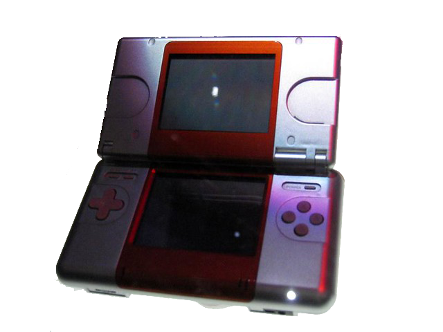
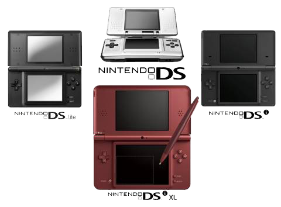

First conceived by former president Hiroshi Yamauchi around mid-2002, the codenamed Project Nitro began development as an experiment inside Nintendo's headquarters. The idea was to create a dual-screen handheld console, along the lines of some Game & Watch models from the 80's which had a clam-shell design and two screens. The mission was to bring a different, unconventional kind of console that would take advantage of unexplored technologies at the time.
After some years of intensive development and during hard times at Nintendo due to the low sales of the Gamecube, yet with a strong grip on the portable market with the Game Boy Advance, Reggie Fils-Aime unveiled Nintendo's next-gen console: the Nintendo DS.
All it took was Reggie's reaching his suit's left pocket to change the world of gaming. Under Nintendo's philosophy of innovation before horsepower, the Nintendo DS was shown as a game-changer for developers and gamers alike, offering a world of possibilities and game mechanics that seemed impossible on any console at the time, let alone a handheld. Two displays, touch input, a microphone, Wi-Fi compatibility to play with people around the globe. So many features crammed into a pocketable piece of tech!
It was a no-brainer: the Nintendo DS launched on December 2004 in both North America and Japan and sold almost 3 million units on a single month. And with each new iterarion of the console, the sales number only went higher and higher. As of 2016, there were a whopping 154.02 million units sold, leaving the DS as not only Nintendo's best-selling handheld (surpassing even the mythical Game Boy), but their best-selling console of all time.
